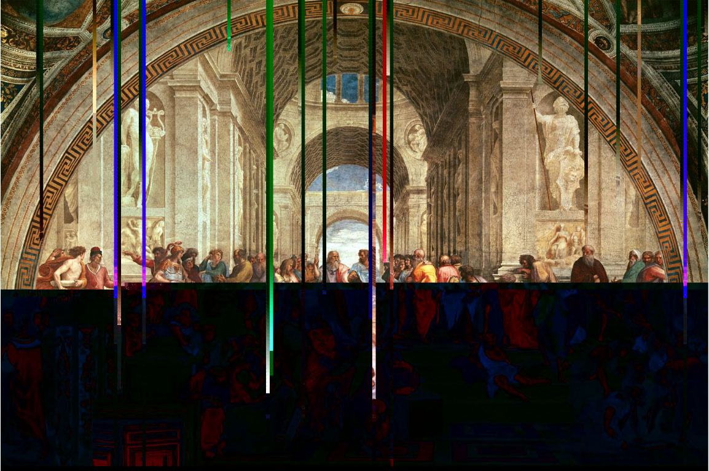
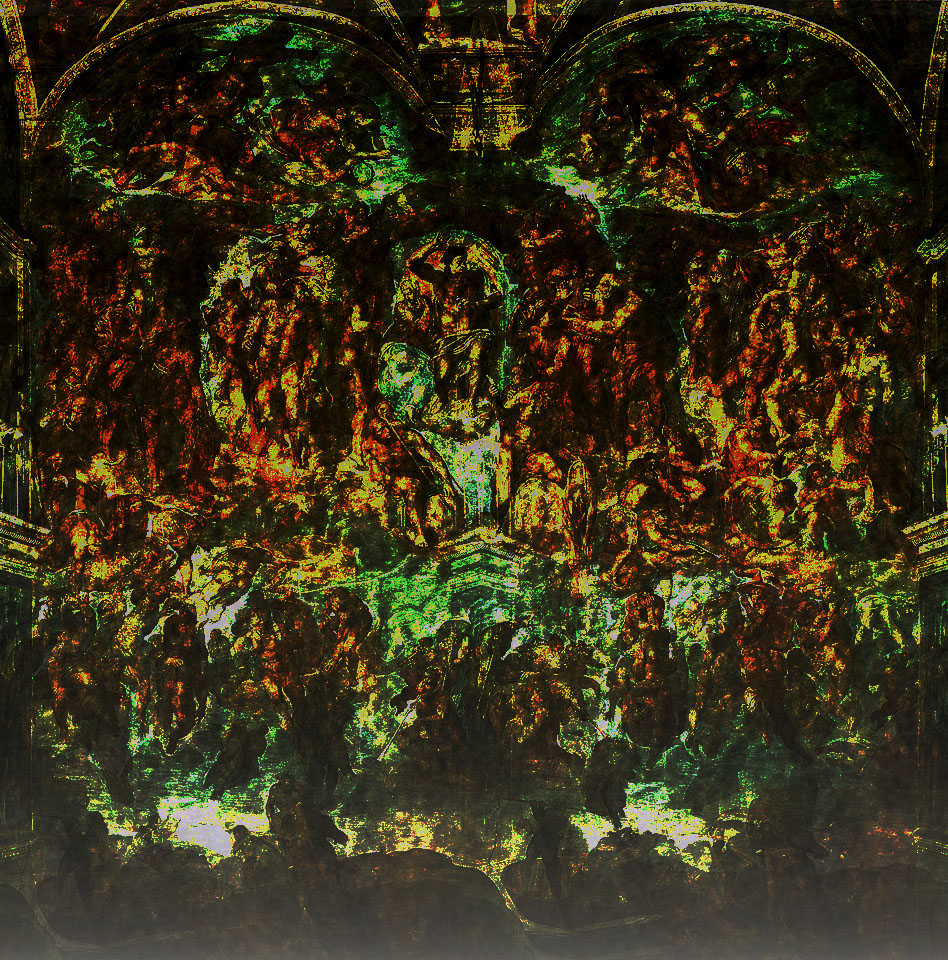
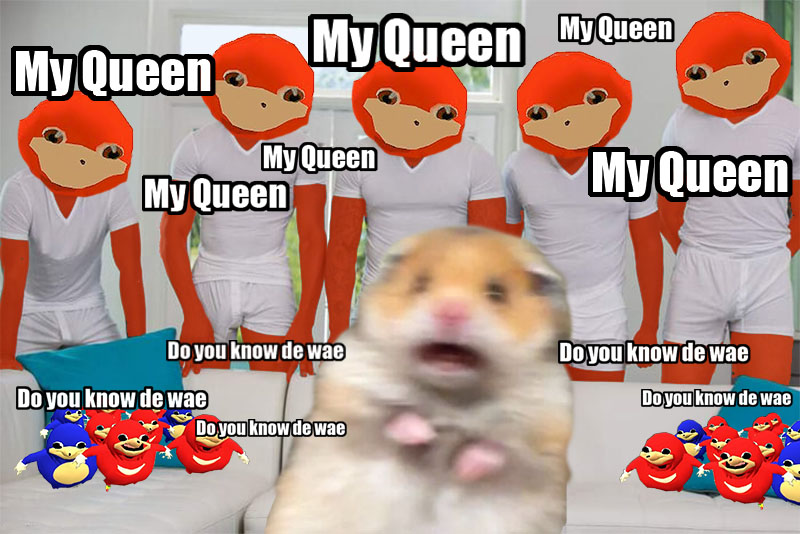
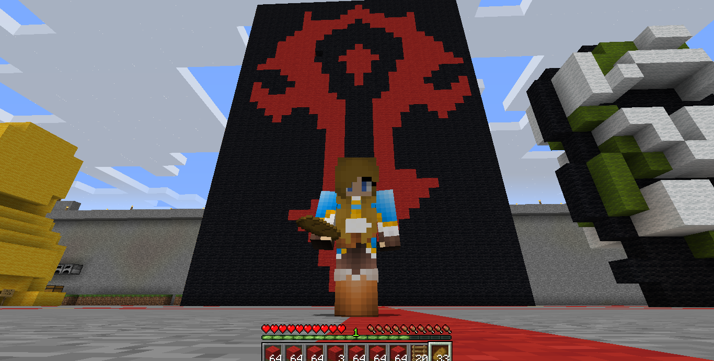
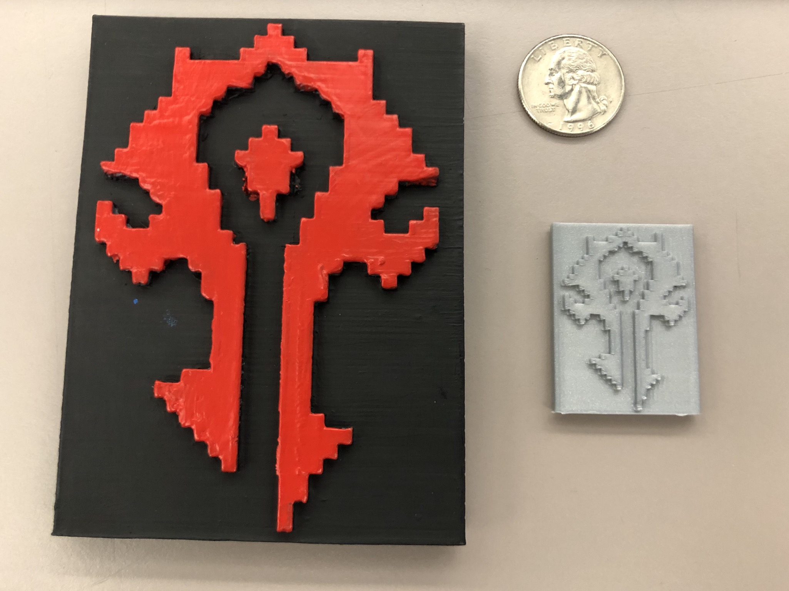
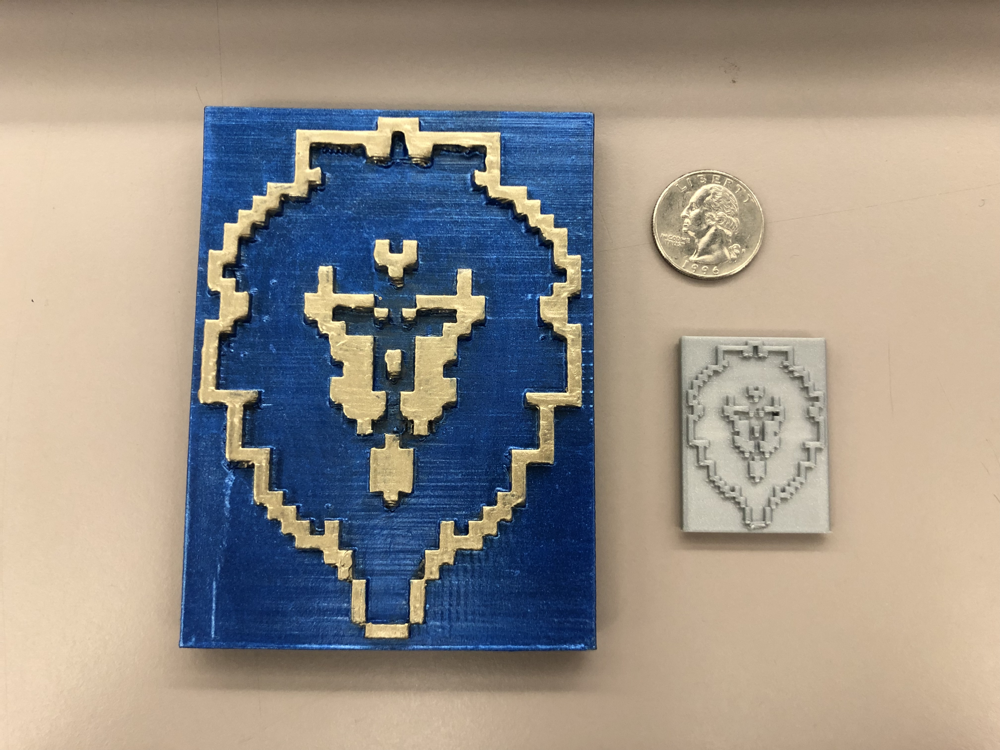
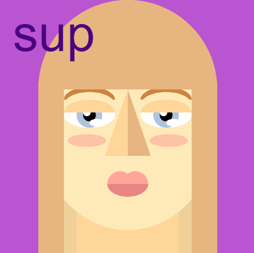
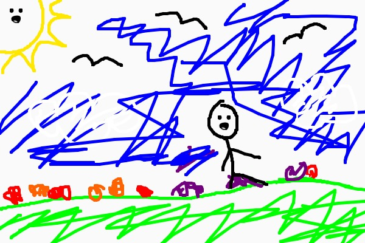
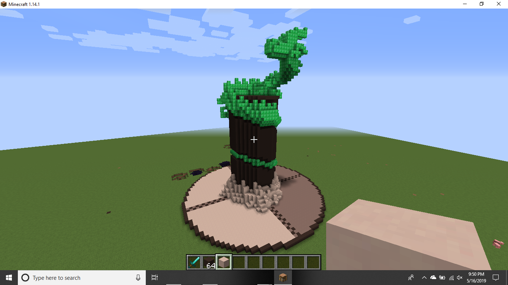

Collaboration: "Feeding the Homeless"

This was a collaboration between myself, Savannah Singh, Aleisha Marie La Roque, Garrett Canepa.
This was a collaboration between myself, Savannah Singh, Aleisha Marie La Roque, Garrett Canepa.


The idea behind these images is to take something and edit it in a program it was not intended to be editted in.

I mashed up a couple memes.


I built an obhject inside Minecraft which I find culturally significant. I made the Horde and Alliance sigils because I feel that the game World of Warcraft is culturally significant. It is a game that has survived about 14 years at this point and is an important part of my own childhood.


I printed the thing I made in Minecraft. It is a front/back item, not two separate objects.

Art 74 Class Site(Click to go to piece.)
This work feels unfinished to me at this point of time. It is a story about the viewer needing to go shopping for their new puppy. I would like to expand on this at some point and make alternate endings.

Art 74 Class Site(Click to go to piece.)
This is a self portrait I made in the p5 language using processing. I kept it very geometric to reference the

Go to the drawing tool and try it yourself.(Click to go to piece.)
This is a drawing tool I made in Processing using the p5 panguage.


I revisited the Minecraft and 3D Printing projects and made my own recreation of the Jade Serpent statue. The real version of the statue can be found in the Serpent's Heart inthe Jade Forest on Pandaria in World of Warcraft.